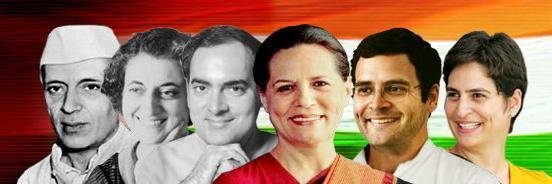

|  |
MANIFESTOOur manifesto process reflects our commitment to a higher vision - that of listening to the Jan Awaaaz. It is not the ‘mann ki baat’ of one individual but the collective voice of lakhs of people.
We have used all possible tools – website, WhatsApp, email, online petitions, along with meetings with citizens, experts, stakeholders and grassroots activists. Between October 2018 and February 2019, many of you engaged in a conversation with the Congress, in at least 16 languages, through the medium most easily available to you. Our Manifesto Committee organised 121 consultations with the public and 53 consultations with experts such as farmers, entrepreneurs, economists, students, teachers, women’s groups, doctors, lawyers and many others. We held consultations in over 60 locations across 24 States and 3 Union Territories. We also met with NRI representatives from over 12 countries.
|